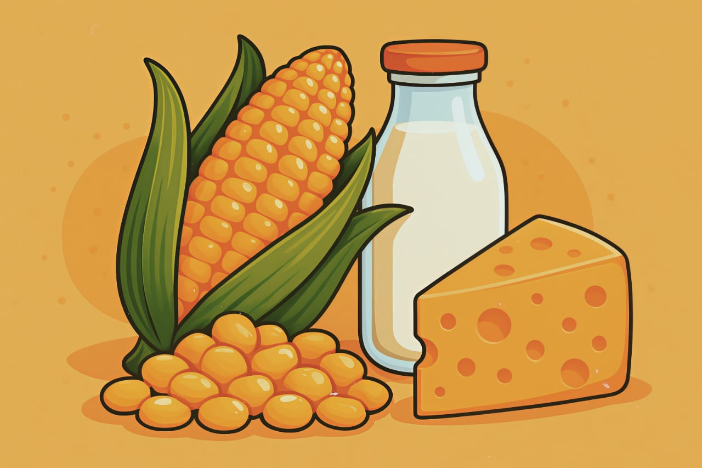

Nikmati kelezatan Jasuke yang hangat, praktis, dan penuh cinta lokal! Tersedia rasa Milo, Coklat, Keju, dan Kombinasi Lezat!
Varian Rasa
Pelanggan Puas
Platform Order
Bahan Lokal

Tentang Kami
Jancuk Maz D adalah usaha mikro yang dikelola oleh Dinar Jhonata, berlokasi di Kost Pondok Barokah, Cimahi Selatan. Hadir dengan misi menyediakan camilan sehat dari jagung lokal yang lezat dan bergizi.
Kami menggunakan bahan baku segar langsung dari petani setempat, mendukung ekonomi lokal sambil memastikan kualitas terbaik di setiap sajian.
Lihat Semua ProdukArtikel
Di tengah pesatnya perkembangan sektor UMKM di Indonesia, banyak pelaku usaha yang terus berinovasi. Jasuke Maz D mengangkat nilai lokal melalui camilan berbahan dasar jagung manis, susu, dan keju.
Berdiri di Cimahi Selatan, Jasuke Maz D menawarkan lebih dari sekadar jajanan tradisional — dengan rasa Milo, Coklat, dan Keju-Coklat, menyasar konsumen dari berbagai kalangan.
Jasuke Maz D berkomitmen menggunakan bahan baku lokal segar dari petani setempat, memberdayakan ekonomi lokal sekaligus menjamin kualitas terbaik.